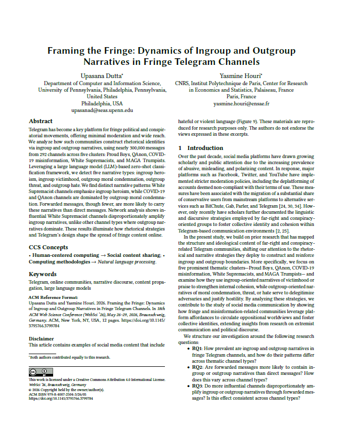
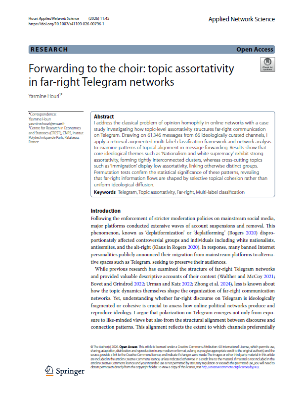

About
I am a Ph.D. candidate at Institut Polytechnique de Paris (France), affiliated with the Centre for Research in Economics and Statistics (CREST). My research sits at the intersection of social and computer science, combining social network analysis and computational linguistics to examine how counterpublics communicate and assert their social identity online.
My published work focuses on English-speaking fringe and far-right Telegram channels, with two peer-reviewed publications featuring unique results on White supremacist groups (Applied Network Science; ACM WebSci'26). I am currently leading a risk-measuring study of Telegram's recommender system.
I will defend my thesis and be on the job market in 2027.
Publications
-

2026⭐ Best paper awardFraming the Fringe: Dynamics of Ingroup and Outgroup Narratives in Fringe Telegram Channels -

2026Forwarding to the Choir: Topic Assortativity in Far-Right Telegram Networks
Talks
Conference Presentations
- ASA 2026 Annual Meeting
- Web'Sci 2026
- IC2S2 2025
- Sunbelt INSNA 2025
- Complex Networks and their Applications 2024
Invited Talks
- University of Edinburgh, School of Informatics and School of Social and Political Science
- Minderoo Centre for Technology and Democracy
- Cambridge Digital Humanities
Internal Seminars
- CREST AI and Social Sciences Seminar
- CREST Sociology Ph.D. Seminar
- CREST Sociodays
- CREST Sociodays
Teaching
ENSAE
- Machine Learning for Natural Language Processing
- Introduction to Python
- Python for Data Science
- Python Programming
ENS-EHESS
- Sociology of Social Networks
Télécom
- Technologies and Society
SICSS-Paris
- Introduction to BERT and GenAI
CV
Click the link below to view my full curriculum vitæ, including prior education, teaching and academic service details.
Show CV